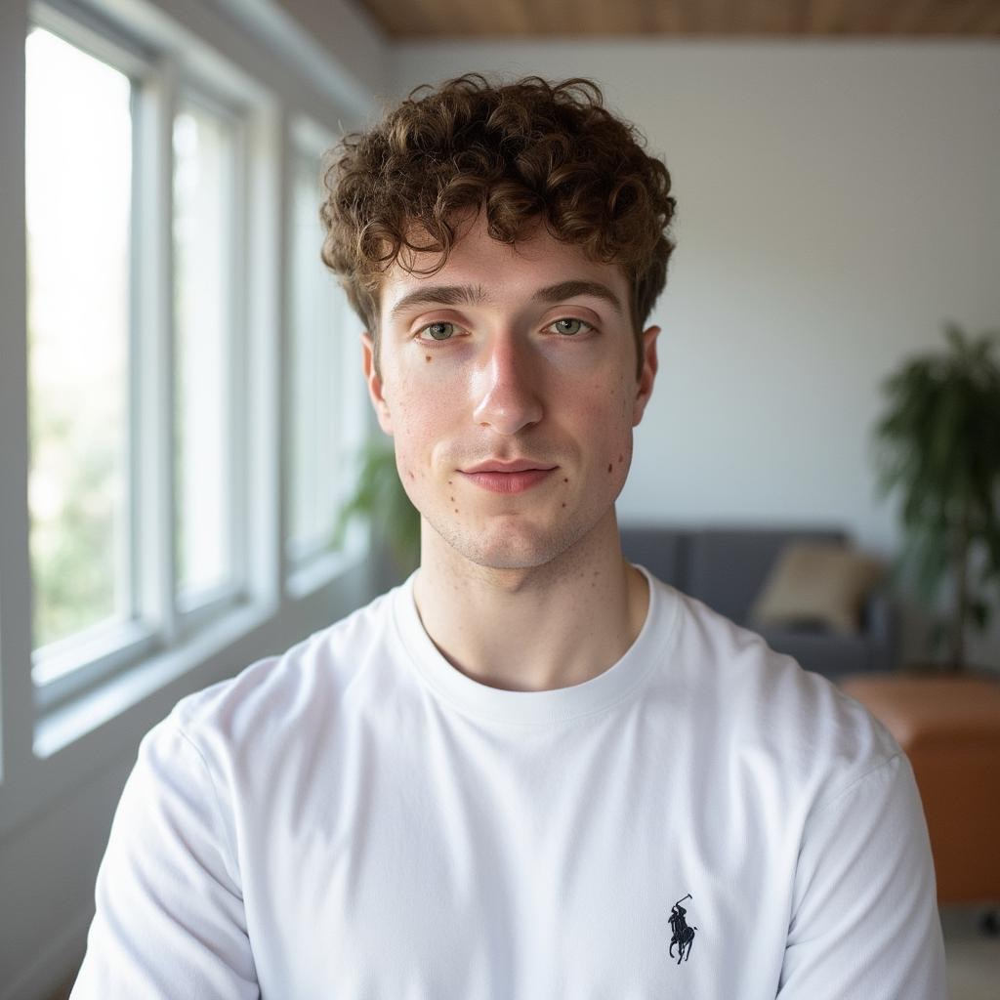
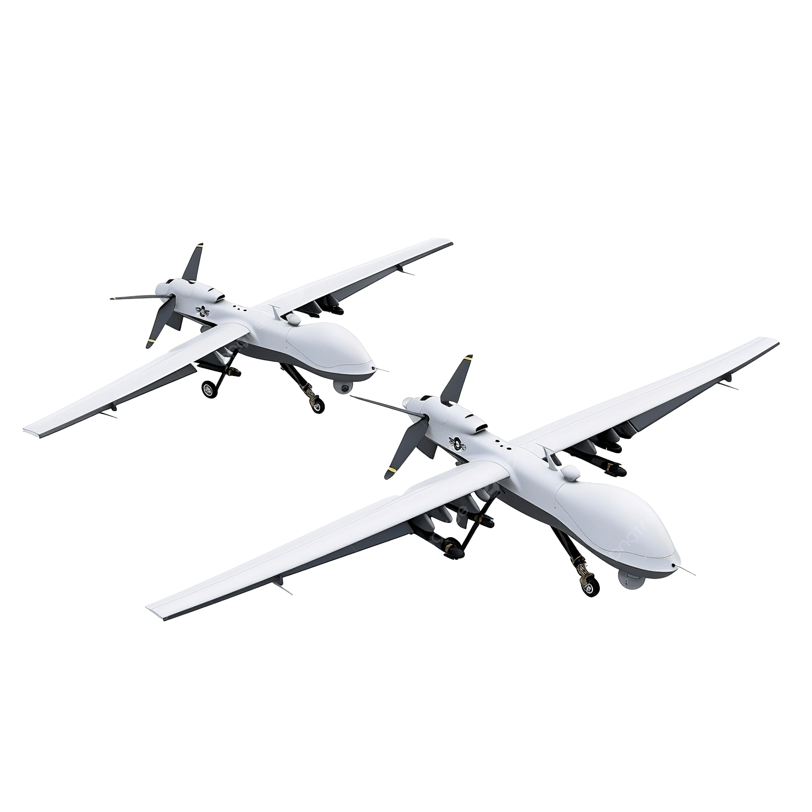
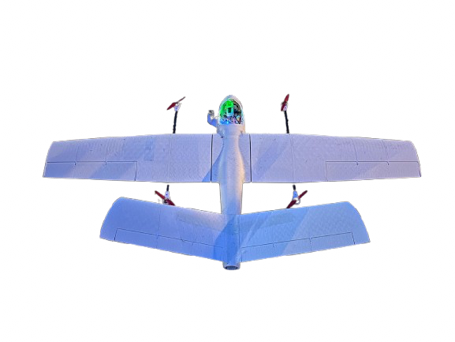
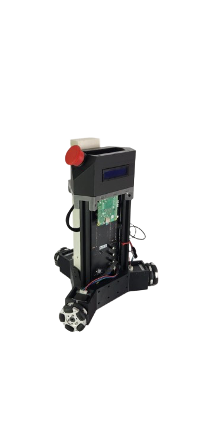

Autonomous UAV — Perception & Navigation Stack
Jury's Favorite Award, Dassault UAV Challenge 2026...
PythonYOLOv8ByteTrackArduPilotMAVLinkComputer Vision
Engineering student building the perception & decision-making software that makes autonomous systems work in the real world — applied ML, computer vision, embedded AI.

I'm an engineering student at ISAE-ENSMA specializing in applied machine learning for autonomous systems...
My path is unconventional...
The next wave of AI won't live only on screens...
Most engineers are either pure software or pure mechanical...
My path is unconventional...

I joined a demanding physics program...
These skills equip me...
I chose ISAE-ENSMA deliberately...
This combination is exactly what autonomous systems demand...
My goal is to graduate as an engineer...
As part of the ENSMAERO team...
I designed and implemented the perception-to-decision software architecture...
During my internship...
As a private tutor...
These skills are indispensable...
A plain-language look at my three flagship autonomous-systems projects.

A self-built drone that detects, tracks and flies to a target on its own. Jury's Favorite Award 2026.
Read the story →
A competition robot that watches the table, plans a strategy and acts on its own — built on a clean three-layer architecture.
Read the story →
A solo build running real-time AI perception onboard an NVIDIA Jetson — the end-to-end proof of embedded ML on real flying hardware.
Read the story →
I've always had a deep passion for life and the universe...

To perform well professionally...

Cinema and literature are my favorite forms of art...

Cinema also sparked my interest...